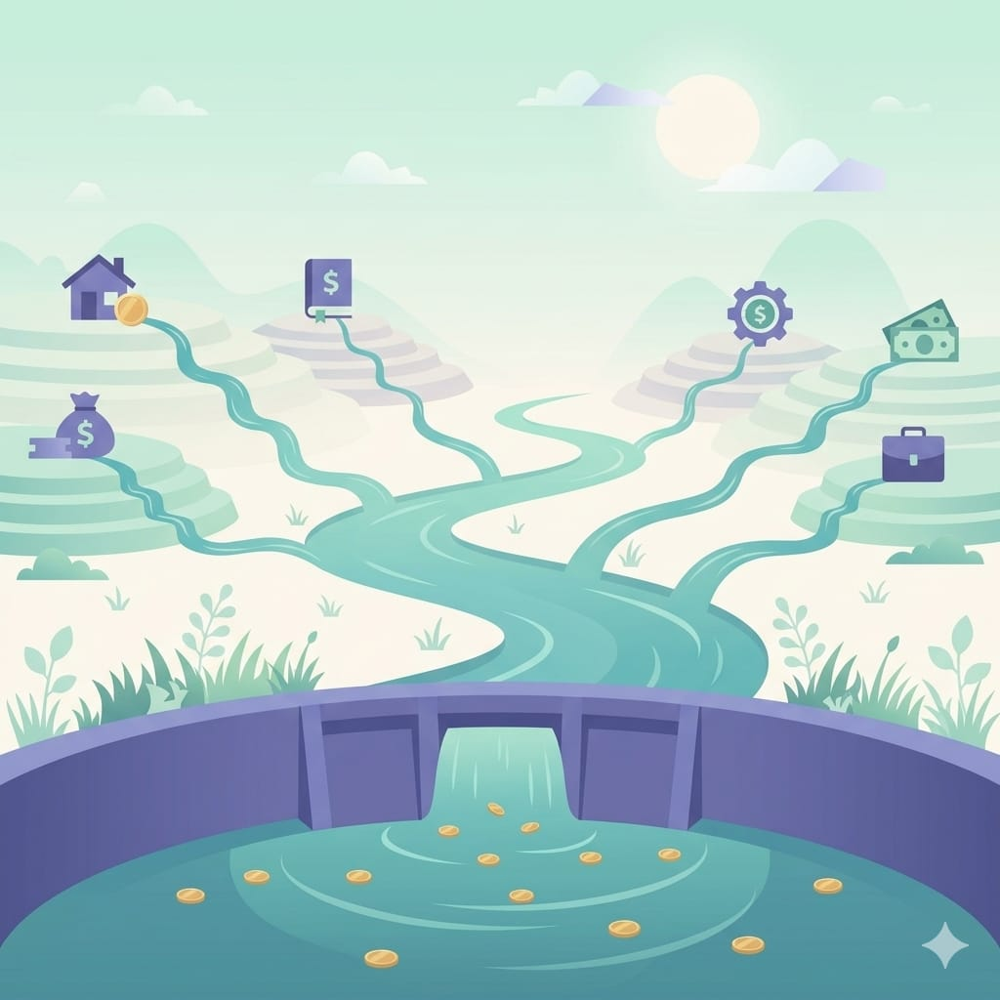

歡迎來到「投資理財修煉」的高手篇。前面入門篇打觀念、進階篇學工具與分析，這最後三篇我們拉高視角，談更宏觀的策略。第一篇就從很多人的終極目標談起——被動收入。
什麼是被動收入
先釐清一個常見的誤解：被動收入不是「不用工作就有錢」，而是「前期投入後，不需要持續用時間換取的收入」。
對比一下：
- 主動收入：用時間直接換錢，例如上班薪水。停止工作，收入就停。
- 被動收入：資產或系統幫你產生的收入，例如股息、租金。就算你在睡覺，它還是持續進帳。
還記得入門篇提到富爸爸的觀念嗎——「讓錢為你工作」，講的就是這件事。被動收入的本質，是把主動收入賺到的錢，轉化成能自己生錢的資產。
常見的被動收入來源

被動收入有很多形式，跟投資相關的常見有：
- 股息：持有會配息的股票或 ETF，定期領股利。這是最多人採用的方式。
- 債券利息：持有債券或債券型 ETF，收固定利息（呼應進階篇談的債券）。
- REITs（不動產投資信託）：不用真的買房，透過金融商品參與不動產收租，領配息。
- 房地產租金：直接持有房產收租，但門檻高、也不完全「被動」（要管理）。
投資以外的被動收入（需要前期大量投入）：
- 內容資產：像你經營的 YouTube、部落格，累積起來後也能帶來持續的廣告或導流收益。
- 數位產品：電子書、線上課程、軟體，做一次可以賣很多次。
打造被動收入的三個階段
被動收入不是一蹴可幾，它有清楚的成長階段：
階段一：累積本金 沒有本金，就沒有能生錢的資產。這階段的重點是提高主動收入 + 控制支出 + 存錢（回到入門篇的記帳與資產配置）。這是最不性感、但最關鍵的一步。
階段二：把本金變成生息資產 把存下的錢，投入會產生現金流的資產——配息 ETF、債券、REITs 等。這階段的重點是穩健配置、長期持有、讓複利發酵。
階段三：現金流滾大 當被動收入開始進帳，把它再投入（而不是花掉），加速資產成長。這就是複利的威力——你的錢生的錢，又去生更多錢。
很多人急著跳到階段三，卻沒做好階段一。沒有本金的被動收入，是空中樓閣。先專注把第一桶金存出來、投入生息資產，被動收入才會慢慢長出來。
一個務實的提醒
被動收入常被過度美化——網路上很多「躺著賺」「財務自由」的說法，把它講得太輕鬆。實際上：
- 需要時間：靠股息累積到能覆蓋生活費，通常要很多年的累積。
- 需要本金：如果一年要 60 萬被動收入、殖利率 4%，你需要 1500 萬的資產。這數字很誠實地告訴你，這是長期工程。
- 沒有零風險的高收益：任何標榜「高配息又零風險」的，都要高度警惕（回到入門篇：報酬與風險永遠一組）。
被動收入是結果，不是捷徑。它是你長期投資、紀律配置後自然長出來的果實。
小結
- 被動收入 = 前期投入後，不需持續用時間換取的收入。
- 常見來源：股息、債券利息、REITs、租金，以及內容/數位資產。
- 三階段：累積本金 → 變成生息資產 → 現金流再投入滾大。
- 它是長期累積的結果，不是快速致富的捷徑。
下一篇，我們把視野再放大到全世界——談全球市場視野：為什麼資產不該只放在一個國家、一個市場。
系列導覽
- 📚 回到 投資理財修煉 全系列目錄
- ⬅️ 上一篇：籌碼面與財務面：法人動向與財報三表
- ➡️ 下一篇：全球市場視野：資產不要只放一個籃子
本文為個人學習記錄與知識整理，非投資建議。投資有風險，請依自身情況獨立判斷 🐾